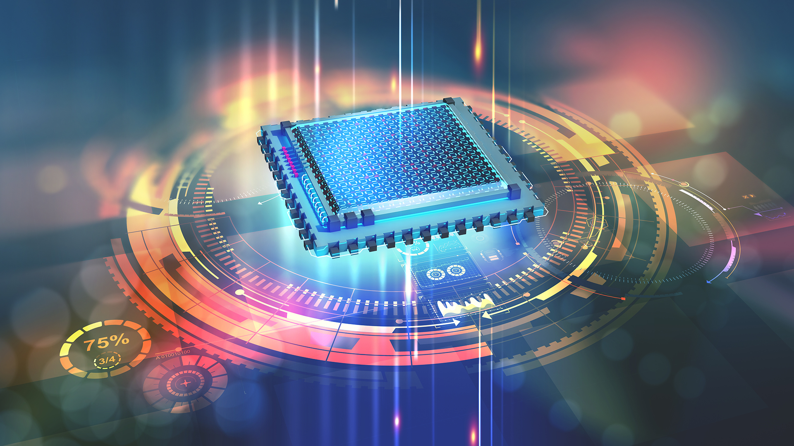

The Rise of Quantum Computing: What It Means for the Future
For decades, quantum computing has been a theoretical dream, confined to physics textbooks and research papers. But in the last five years, that dream has accelerated into a tangible reality, with tech giants like IBM, Google, and Intel making staggering progress.
Unlike classical computers that use bits (0s and 1s), quantum computers use quantum bits or "qubits." This allows them to perform complex calculations millions of times faster. For example, a problem that would take a traditional supercomputer 10,000 years to solve could be cracked by a powerful quantum computer in mere minutes.
Implications Across Industries
The potential applications are boundless. In medicine, quantum computers could model complex molecular structures, leading to the discovery of new life-saving drugs. In finance, they could optimize trading strategies and manage risk in ways previously impossible. For climate science, they could create hyper-accurate climate models to predict and mitigate natural disasters.
However, this power comes with a caveat: the potential to break current encryption standards. This has sparked a global race not only to build quantum computers but also to develop "quantum-resistant" cryptography to secure our digital future.
While a full-scale, fault-tolerant quantum computer is still on the horizon, the progress is undeniable. We are no longer asking "if" but "when," and the answer appears to be sooner than we once thought.